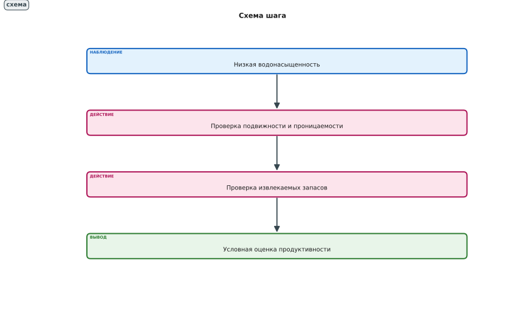

Низкая водонасыщенность сама по себе не обещает добычу.
Автор требует проверить, могут ли углеводороды двигаться и хватит ли извлекаемых запасов.
Пороговая идея. Низкая водонасыщенность сама по себе не обещает добычу. модель
Как это работает
Механизм
Водонасыщенность незатронутой зоны по Арчи — основная величина оценки по каротажу. Но она не даёт полной оценки продуктивности. стр. 127
«The uninvaded zone's water saturation ($S_w$), determined by the Archie equation, is the most fundamental quantity used in log evaluation.»
«But merely knowing a zone's water saturation ($S_w$) does not provide enough information to completely evaluate a zone's potential productivity.»
Практика
Проверьте, допускает ли насыщенность безводное заканчивание — подготовку скважины к добыче без воды. Затем проверьте подвижность углеводородов, то есть способность нефти или газа перемещаться. Уточните проницаемость, способность пропускать флюиды. Оцените, достаточен ли коммерческий объём извлекаемых запасов, которые можно добыть. стр. 127
«- the water saturation is low enough for a water-free completion»
«the hydrocarbons are moveable
the zone is permeable»
«- there is an commercial volume of recoverable hydrocarbon reserves»

Схема связывает исходный признак с проверкой и выводом.
Класс B · схема · нарисовано кодом · стр. 127
Решение на данных
Оцените достаточность сведений
Признаки
Низкая водонасыщенность
Сведения о подвижности, проницаемости и запасах
↓
Правило
Если известна только насыщенность, завершать оценку рано. стр. 127
↓
Вывод
Нужны все дополнительные признаки.
Потренируйтесь
Дано: Водонасыщенность известна, остальных сведений нет. (модель)
Единственная величина не даёт полной оценки.
Частая ошибка по книге
✗Ошибка: Зная водонасыщенность, можно определить продуктивность.
✓На самом деле: Помимо насыщенности нужны подвижность, проницаемость и коммерческий объём извлекаемых запасов. стр. 127
Что это значит для данных по книге
Водонасыщенность и сведения о подвижности, проницаемости и запасах → Оценка потенциальной продуктивности.
Вход
Водонасыщенность и сведения о подвижности, проницаемости и запасах
Выход
Оценка потенциальной продуктивности
Где ломается
Если одна проверка подменяет все остальные
Где здесь ручной труд специалиста
Входные данные
Водонасыщенность и сведения о подвижности, проницаемости и запасах
Ручные шаги
Проверьте возможность безводного заканчивания, подвижность углеводородов, проницаемость и коммерческий объём извлекаемых запасов.
Точки суждения
Какое из условий действительно подтверждено
Время
Зависит от полноты входных данных и числа проверок; глава не даёт оценки времени.
Типичные ошибки
Приравнять низкую водонасыщенность к коммерческой добыче
Аналогия модель
Низкая доля ошибок не заменяет проверок готовности релиза.
Где аналогия перестаёт работать: Геологические характеристики могут быть физически связаны; критерии не обязаны быть независимыми.
Новые понятия
Водонасыщенность (water saturation)
Доля порового пространства, заполненная водой. модель
Незатронутая зона (uninvaded zone)
Часть пласта, куда не проник фильтрат бурового раствора. модель
Все утверждения шага с дословной цитатой автора и страницей книги (по PDF).
Водонасыщенность незатронутой зоны по Арчи — основная величина оценки по каротажу. наблюдение
«The uninvaded zone's water saturation ($S_w$), determined by the Archie equation, is the most fundamental quantity used in log evaluation.»
Одной водонасыщенности недостаточно для оценки потенциальной продуктивности. наблюдение
«But merely knowing a zone's water saturation ($S_w$) does not provide enough information to completely evaluate a zone's potential productivity.»
Проверяют, достаточно ли низка водонасыщенность для безводного заканчивания. наблюдение
«- the water saturation is low enough for a water-free completion»
Отдельно проверяют подвижность углеводородов и проницаемость. наблюдение
«the hydrocarbons are moveable
the zone is permeable»
Необходим коммерческий объём извлекаемых запасов углеводородов. наблюдение
«- there is an commercial volume of recoverable hydrocarbon reserves»
Исходный текст урока
Стр. 127 · ARCHIE WATER SATURATIONS: $S_W$ AND $S_{XO}$
The uninvaded zone's water saturation ($S_w$), determined by the Archie equation, is the most fundamental quantity used in log evaluation. But merely knowing a zone's water saturation ($S_w$) does not provide enough information to completely evaluate a zone's potential productivity. A geologist must also determine if:
Стр. 127 · ARCHIE WATER SATURATIONS: $S_W$ AND $S_{XO}$
- the water saturation is low enough for a water-free completion the hydrocarbons are moveable the zone is permeable
Стр. 127 · ARCHIE WATER SATURATIONS: $S_W$ AND $S_{XO}$
- there is an commercial volume of recoverable hydrocarbon reserves